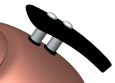

在部件导航器中，双击摄像机 front_upper_right 以激活它。
右击 front_upper_right 并选择复制。
再次右击 front_upper_right 并选择粘贴。
摄像机 front_upper_right$1 被添加到摄像机列表中，新摄像机名称中的后缀 $1表明它是复制来的。
右击 front_upper_right$1并选择编辑。
在编辑摄像机对话框的名称组中，将摄像机名称更改为 close_up_handle，然后点击确定。
旋转并缩放以查看手柄。

在部件导航器中，右击 close_up_handle 并选择捕捉视图。